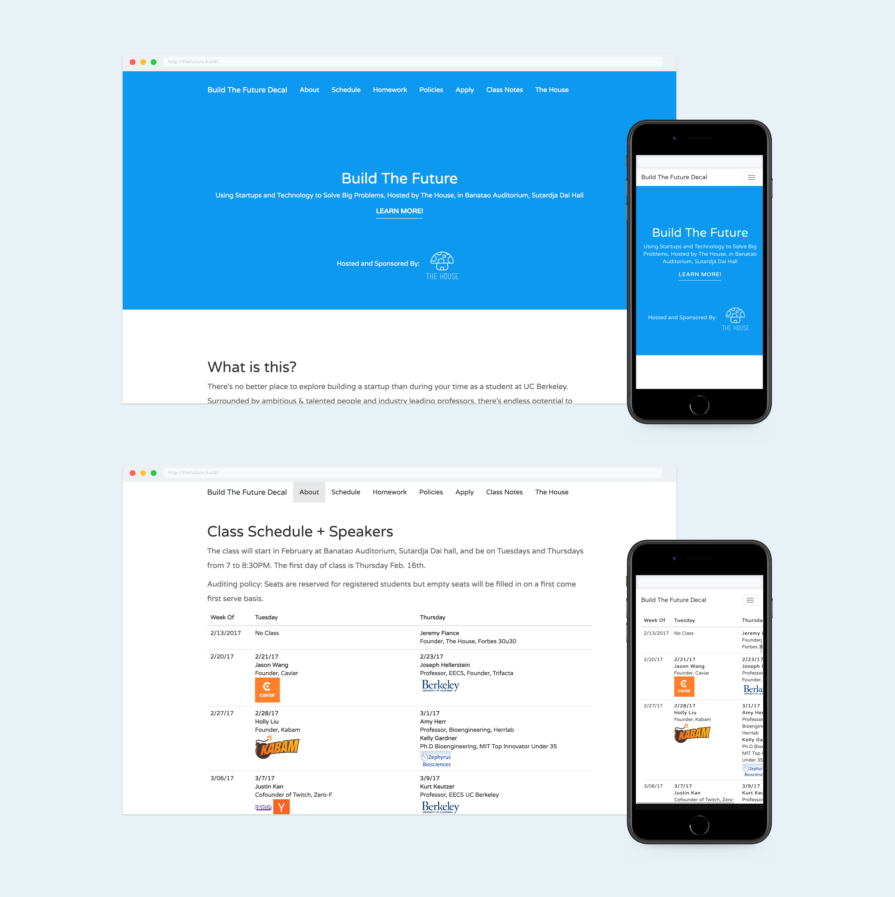
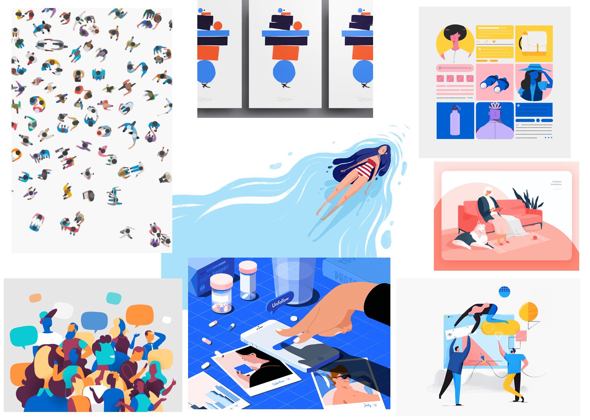
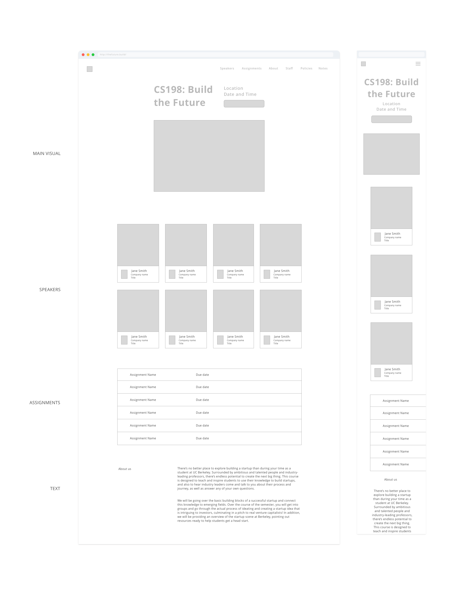
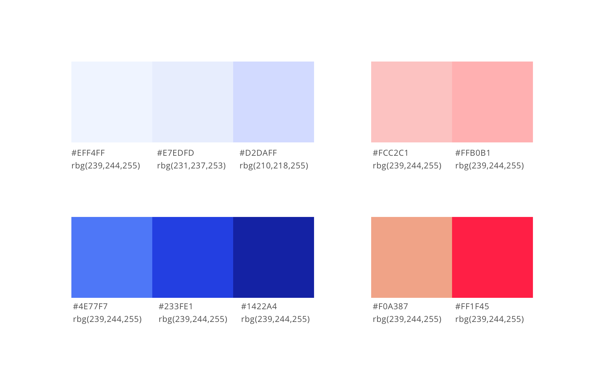
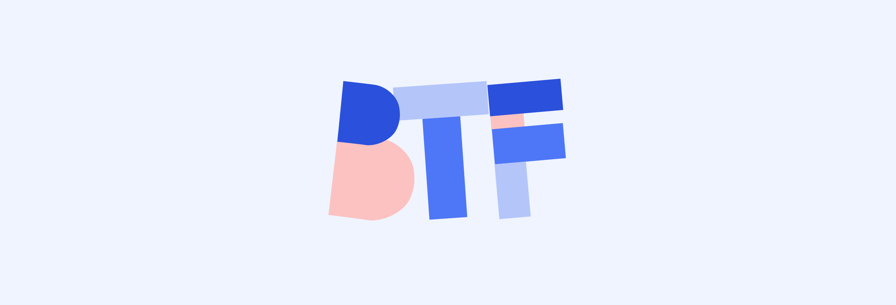
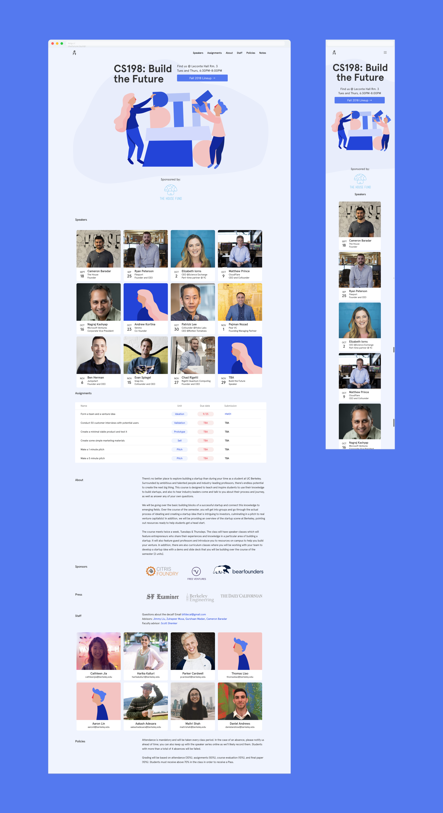

Build the Future
Role: Lead designer, Brand, Web developer
Tools: Sketch, Illustrator, Javascript
How might we refresh Build the Future's identity, while staying true to its entrepreneurial values?
Build the Future is a two unit course at UC Berkeley designed to teach and inspire students to use their knowledge to build startups, featuring industry leaders who come and speak about their personal journeys.
We go over the basic building blocks of a successful startup and connect this knowledge to emerging fields. Over the course of the semester, we divide our class of 50 students into groups and go through the actual process of ideating and creating a startup idea that is intriguing to investors, culminating in a pitch to venture capitalists. In addition, we provide an overview of the startup scene at Berkeley, pointing out resources ready to help students get a head start.
The course website contains information about upcoming guest speakers, course policies, and course staff. Below are screen captures from the previous design.
Build the Future needed a new identity that would help define the voice of the organization as well as streamline the curriculum.
There were some key things this new brand needed to accomplish for the course.
1. Unique voice: While the course was founded under a campus startup incubator, the course had started to grow independent from this campus entity. Hence, the course needed to establish a new identity unique from its old brand.
2. Modular visual language: The course needed a modular visual design system, a cohesive visual language which also offered flexibility with the various design needs of the curriculum, including showcasing guest speakers from partnering companies.
3. Establish common language: For a student run course, who's course staff turnover rate was pretty much every semester, a better way to communicate design specification was necessary to establish a cohesive voice.
Having been course staff for 2 semesters, I built a strong understanding for the goals and values in which the course was built upon.
1. Learn: Focus on learning and not the title that comes with it. Title will come naturally. Craftmanship in business stems from a mastery of tools.
2. Diversity: Work with people with personality and different experiences. Work with people who are independent thinkers, have struggled, and failed.
3. People: Success derives from a deep empathy for people. Work on something meaningful. Work on projects that are challenging, impactful, and make a difference. We're rethinking the social contract that businesses are founded upon, proposing an ‘ethical economy’ that integrates moral concerns with economic measurement.
Recognizing the values in which Build the Future stood for, human centricity and innovation, I put together a moodboard to convey what I envisioned the redesign would look like.
The design of these interfaces were informed by the knowledge that our students primarily access the course website via mobile.
Hence, I used a mobile first design lens when I created these interfaces. The interface as a whole needed to act responsively regardless of screen size. I drew inspiration from Notion.so, defining all page content as a static size whereas the margins would resize as necessary.
The landing page was designed such that shrinking the webpage would make the header, subheader, and button stack. The interface for weekly guest speakers was designed to resize well on various screens and to convey crucial information in an efficient manner. I chose to use a calendar interface metaphor, with each card representing a different week and speaker. I also chose to include a photo of the speaker rather than a company logo to echo the humanistic values of our decal. The class was created so our students could learn about entrepreurship from personal narratives rather than company pitches.
The basis of the illustration was defined by the interface.
Because this illustration is meant to be center justified regardless of screen size, it was necessary for the illustration to be relatively symmetrical. I chose to incorporate people to echo the course's humanistic values, and the building blocks highlight the curriculum, which is meant to introduce of "building blocks" of entrepreurship to our students. My choice of boldly colored shapes was also informed by a concern for loss of detail on smaller screens.
My bold color choices are consistent with my motivation to mitigate loss of detail on smaller screens.
The choice of violet toned blues are a gentle nod at our parent organization that we were founded under, whose color palette is a bright sky blue.
The final logo echos the same components of the illustration to maintain a consistent voice throughout the brand.
This is the final website. You can also visit it here: www.thefuture.build
Completing this project highlighted the advantages of having a technical background when designing products.
My understanding of flex displays, responsive design, and interface metaphors helped me created an optimal user interface that could be viewed from any size screen. I was also able to take a uniquely strategic approach to branding. This project has only further reinforced my belief that all designers should code and all coders should design! Neither skill is mutually exclusive of the other. Products should be driven by a recognition for aesthetic implications and informed by technical logic.
I've also learned a lot about concrete success metrics.
As a part of the course staff, I have seen our course website pulled up on our students screens a lot. Seeing my product in use and actually serving its functional purpose of being the central repository of course information is a deeply satisfying feeling.
Use dark mode